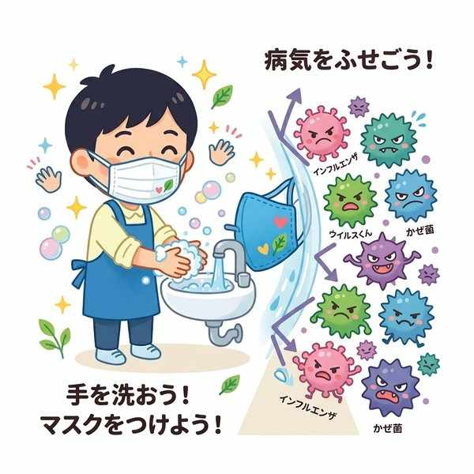
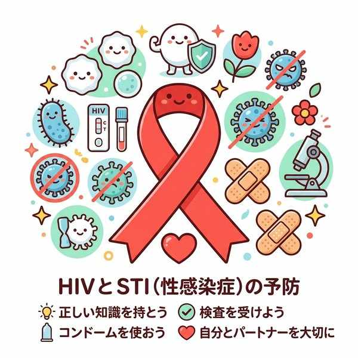

単元5: 感染症とその予防
感染症は、ウイルスや細菌などの目に見えない小さな病原体が体に侵入し、増殖することで起こります。この単元では、感染症が起こる仕組みと、それを防ぐための「予防の三原則」、そして性感染症やエイズの特徴・感染経路について解説します。
1. 感染症の仕組みと特徴
- 感染症（かんせんしょう）：細菌やウイルスなどの病原体が体内に侵入し、増殖して引き起こす病気。
- 潜伏期間（せんぷくきかん）：病原体に感染してから、実際に症状（発熱や咳など）が出るまでの期間。病気によって期間は異なります。
- 病原体の種類：
- ウイルス：インフルエンザウイルス、ノロウイルス、HIVなど（自分で細胞を持たず他人の細胞に寄生して増殖）。
- 細菌：結核菌（けっかくきん）、ピロリ菌、コレラ菌など（単細胞生物で自分で分裂して増殖）。※結核の原因はウイルスではなく結核菌（細菌）です。
2. 感染症予防の三原則
感染症を防ぐためには、「感染源」「感染経路」「体の抵抗力（感受性）」の3つのつながりを断ち切ることが必要です。テストで最もよく問われるセクションです。
| 予防の原則 | 具体的な対策の考え方 | 具体的な対策の例 |
|---|---|---|
| 1. 感染源対策 （発生源対策） |
病原体そのものをなくす、または保有している人や動物の治療・隔離を行い、周囲に広げないようにすること。 | 消毒、殺菌、感染者の隔離・休養、感染ペットの駆除など |
| 2. 感染経路対策 | 病原体が感染源から別の人の体へ侵入する道筋（ルート）を遮断すること。 | 手洗い、うがい、マスク着用、部屋の換気、人混みを避けるなど |
| 3. 体の抵抗力を高める （感受性者対策） |
病原体が体に入ってきても、負けない強い体づくりをすること。また、免疫力をつけておくこと。 | 十分な睡眠、バランスの良い食事、適度な運動、予防接種（ワクチン）による免疫・抗体の獲得 |

感染症を予防する「三原則」
3. 性感染症とエイズ
主に性的接触を介して病原体が感染する病気を性感染症（せいかんせんしょう）といいます。代表例には、梅毒、クラミジア感染症、淋菌感染症などがあります。
① エイズ（後天性免疫不全症候群）
エイズは、HIV（ヒト免疫不全ウイルス）という病原体に感染することで引き起こされる病気です。 HIVは体内のリンパ球（白血球の一種で免疫の中心）を破壊するため、体の免疫力が著しく低下し、普段ならかからない弱い病原体による感染症（日和見感染）やがんにかかりやすくなります。
② HIVの感染経路と誤解
HIVの感染経路は以下の3つに限定されています。日常生活の中で感染することはありません。
- 性的接触：最も多い感染経路。コンドームの正しい使用などで予防できます。
- 血液を介した感染：注射器の回し打ちや輸血など。
- 母子感染：感染している母親から妊娠・出産・授乳を通じて赤ちゃんに感染する。
握手、会話、同じプールや風呂の使用、咳やくしゃみ、蚊などの虫に刺されることなどでは、HIVは感染しません。正しい知識を持ち、感染者に対する差別や偏見をなくすことが重要です。

HIV（ヒト免疫不全ウイルス）の感染経路
🔥 定期テスト対策・暗記のコツ
① 予防対策の3分類の判別
「手洗い・マスク・換気 ➔ 感染経路対策」「部屋の消毒・熱が出たから休む ➔ 感染源対策」「予防接種・睡眠 ➔ 抵抗力を高める」。これらがどの対策に当てはまるかを答えさせる問題は超頻出です。
② 結核の原因は「細菌（結核菌）」
結核は歴史的にも有名な感染症ですが、原因はウイルスではなく「結核菌（細菌）」です。ここを「結核ウイルス」と書いて失点する人が多いため、注意が必要です。
③ エイズとHIVの言葉の区別
病気の名前は「エイズ（後天性免疫不全症候群）」、その原因となるウイルスの名前は「HIV（ヒト免疫不全ウイルス）」です。この2つの言葉が逆にならないように整理しておきましょう。